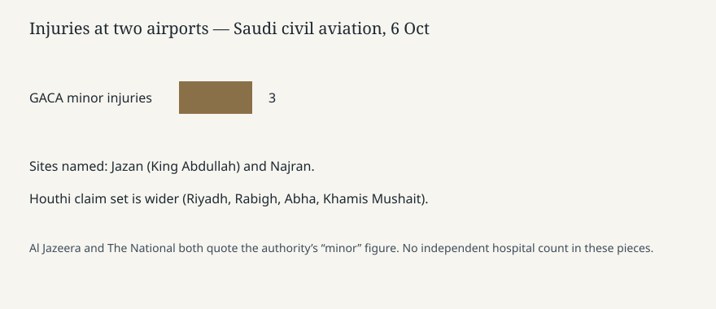

Jazan · Yemen war · 6 October 2026
Saudi civil aviation reported three minor injuries at Jazan and Najran airports

What the desks agree
Saudi Arabia’s General Authority of Civil Aviation said attacks on Monday evening hit King Abdullah bin Abdulaziz airport in Jazan and Najran airport, both in the south near the Yemen border. Al Jazeera and The National, publishing Tuesday 6 October 2026, quote the authority: three minor injuries and material damage. Specialised teams responded. The authority said it was still assessing damage and taking steps for passengers and staff. That is the confirmed injury line. It is not a hospital registry released to the wires.
Yemen’s Houthis, also called Ansar Allah, said late Monday that their forces had targeted sites across southern Saudi Arabia, including airports and military sites. The National adds a wider Houthi claim set: King Khalid airport in Riyadh, an Aramco site in Rabigh, Abha airport and the Khamis Mushait military base. Saudi civil aviation, in the pieces above, confirmed two airports and three minor injuries. It did not, in these articles, confirm Riyadh, Rabigh or Abha. A claim list and a confirmed list are different objects.
The Saudi-led coalition said early Tuesday that it had destroyed a ballistic-missile launch platform in Sanaa, which the Houthis have held since 2014. Al Jazeera’s live blog also reports that forces of the recognised Yemeni government said they had retaken the port city of Mocha and had opened a push near the Bab al-Mandeb strait. Those are military claims. No independent monitor’s map is attached.
What is only a quote
Al Jazeera’s deck on one page says “severe injuries.” The authority’s sentence, quoted in the same story and in The National, says “three minor injuries.” The deck and the quote conflict. The quote is the checkable line; the adjective in the deck is the outlet’s. Houthi language about “varying severity” is the group’s description of its own strike, not a medical chart.
Sunday’s announcement by Rashad al-Alimi that the recognised government would try to retake Houthi-held territory is the campaign frame from Monday’s dossier. Tuesday’s airport strikes and the coalition’s Sanaa strike are the next reported exchanges. They do not, by themselves, prove that a district changed hands.
Why the geography matters
Jazan and Najran sit on the Saudi side of the border that has taken cross-border fire in earlier rounds of the Yemen war. A civil airport is a different target class from a front-line post: the authority’s job is passengers and pavements, which is why its statement is the injury source. Sanaa is the Houthi-held capital. A coalition claim to have hit a launch platform there is an air-campaign claim, not a ground seizure. Mocha is a Red Sea port. If the recognised government’s retake claim holds, it would matter for the Bab al-Mandeb approaches. “If” is still required.
The U.S. connection in this week’s coverage is the wider war file: Camp David discussions reported second-hand on Friday, and a U.S. role in the regional air campaign that wires have described for months. Tuesday’s airport statement does not quote a U.S. Central Command release. This page does not invent one.
What this story is not
It is not a count of deaths. None of these pieces report a death at the two airports. It is not confirmation of every site on the Houthi list. It is not a photograph of wreckage; the still is a corniche in Jazan, a place image, labeled as such. It is not a verdict on who fired first on Monday evening. The coalition’s Sanaa strike and the airport strikes are both dated to the same night and morning, in that order in the copy, without a shared timeline down to the minute.
The stable Tuesday facts are the authority’s two airport names, three minor injuries, material damage, a Houthi claim that is wider than the confirmation, and a coalition claim of a launch platform destroyed in Sanaa.

What remains unchecked
No flight-cancellation table is in these stories. “Material damage” is not itemised into runway, terminal or radar. The coalition’s sentence about a launch platform in Sanaa does not include bomb-damage imagery in the copy used here. The recognised government’s Mocha claim is a single military voice on a live blog. A later satellite note could confirm or cut it; Tuesday morning’s text cannot. Wikipedia’s current-events line for 6 October cites Al Jazeera for missiles against Najran and Jazan and for three wounded, which matches the authority’s count and does not add a fourth site.
Oil flows are a neighbouring fact, not this strike. A Reuters morning note said Gulf exports excluding Iran were about 19.2 million barrels a day in September against about 23.6 million before the war. That series is not evidence about who hit Jazan. It is context for why an airport in the south is being read in commodity desks as well as in war desks.
Source articles and scores
| Outlet | Headline | T | N | C |
|---|---|---|---|---|
| Al Jazeera | Saudi Arabia says three wounded in attacks on airports near Yemen border | 88 | -4 | 78 |
| The National | Saudi airports attacked as Yemen’s west coast battle intensifies | 90 | 0 | 86 |
| Al Jazeera live | Iran war live: Houthis bombed in Yemen; injuries as Saudi airports attacked | 84 | -6 | 70 |
The National keeps the authority’s “minor” wording next to the wider Houthi claim. Al Jazeera’s story deck says severe while the body says minor, which is the complicity cut. The live blog treats the Mocha retake as a government statement, but the headline stack presents it as event.